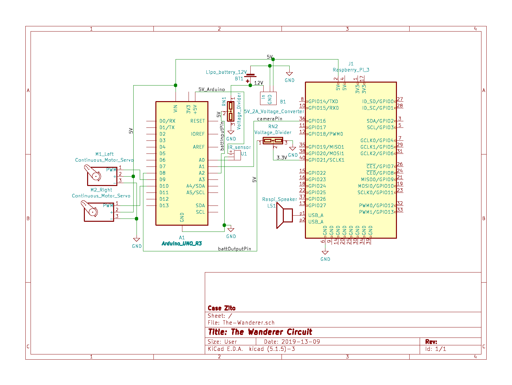

Electrical Breakdown
For the electrical design, the biggest step was converting 12V battery power to 5V for the Raspberry Pi and servo motors. Two voltage dividers were needed to allow signal capture while preventing pin damage. The rest of the electrical was connecting components so that the software team has everything they need to program the robot behavior. The schematic for the electrical design is below, and subsystem descriptions follow.

Power Conversion:
- The 12V battery directly powers the Arduino while the Raspberry Pi and Servos require 5V with significant current. We used 4 5V 0.5A voltage converters in parallel to provide ample power. We chose these components because they were readily accessible and simple to implement; providing 12V and ground, these ICs output 0.5A at 5V with proper heat dissipation. We needed to supply at least 1A of current to the Raspberry Pi to keep up with sustained peak load while processing images, so we doubled the power capacity of the conversion circuit to accommodate any future components, which turned out to be the servos. A simpler thing would be to use a 5V 2A voltage converter (linked in our bill of materials).
Voltage Dividers:
- Battery monitoring by Arduino- To prevent overdraw of the battery, we want the system to measure the level of the battery. With a range of 10.8-12.6V, the Arduino cannot natively sample the battery level, so we constructed a voltage divider with a scale factor of 0.231, placing the measured battery level in the 2.5-3.0V range. The resistor values used for this divider are 9k and 30k, where 9k/(9k+30k) = 0.231.
- Low battery signal from Arduino to Raspberry Pi- The Raspberry Pi and Arduino have differing logic levels of 5V and 3.3V, respectively. For the Arduino to indicate a low battery, its 5V digital signal must drop to 3.3V. Since this connection is only one way, we used a voltage divider with a scale factor of 0.66. The resistor values used for this were 10k and 20k, giving 10k/(10k+20k) = 0.66.
Arduino Pins:
Arduino directly powered by the battery through the barrel jack
- A0- connected to the output of the infrared sensor
- A1- connected to the Raspi pin 36, the cameraPin
- A2- measures the battery level through a voltage divider, the battInputPin
- D8- sends the “low battery signal” to the Arduino through a voltage divider input, battOutputPin
- D9- PWM signal for the left servo motor
- D10- PWM for the right servo motor
Raspberry Pi Pins:
Raspberry Pi powered by the 5V2A converter on pins 4 and 6.
- GPIO16 (pin 36)- sends person detection indication to Arduino (cameraPin)
- GPIO21 (pin 40)- receives low battery indication from Arduino through a voltage divider
- USB- USB speaker for sounds
- Note: In order to program the Raspberry Pi, we used a wireless mouse and keyboard and then plugged a monitor into the HDMI
Other Components:
- The IR sensor is powered and monitored by the Arduino
- The servos are powered by the 5V2A converter and controlled by the Arduino's PWMs